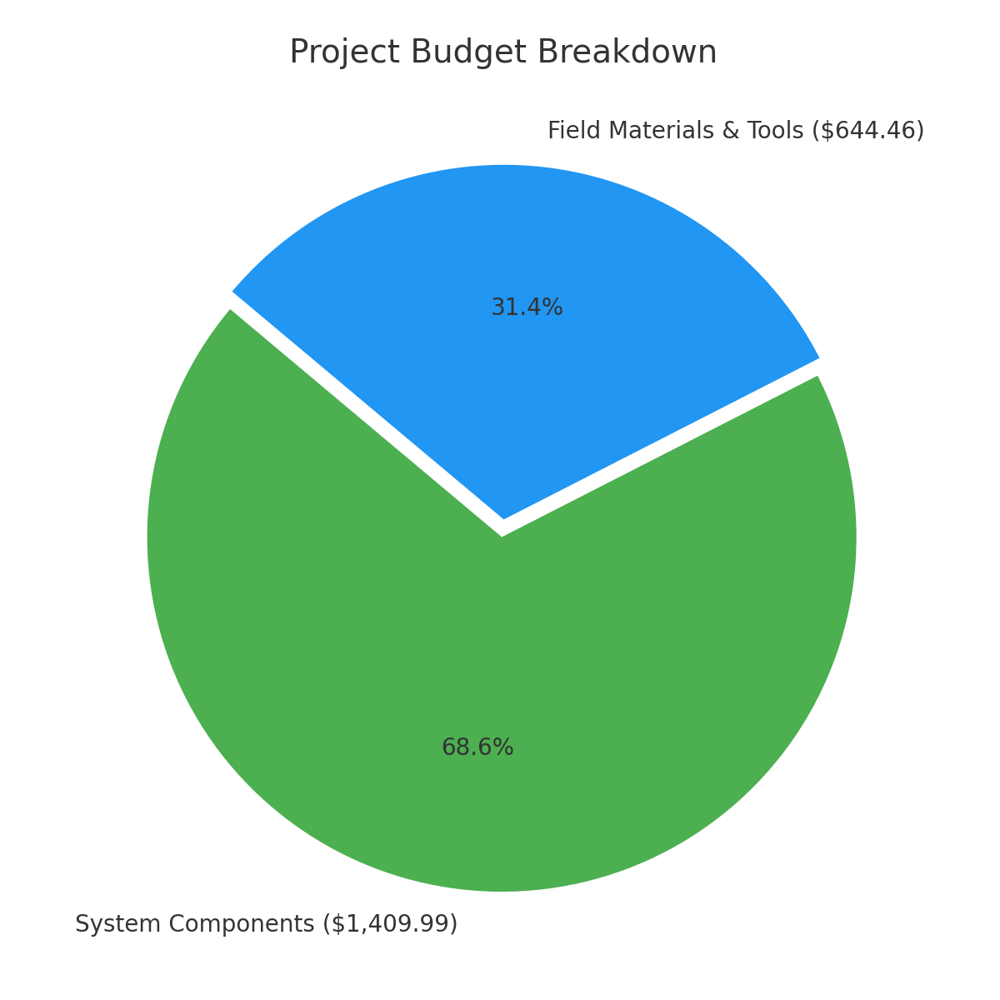
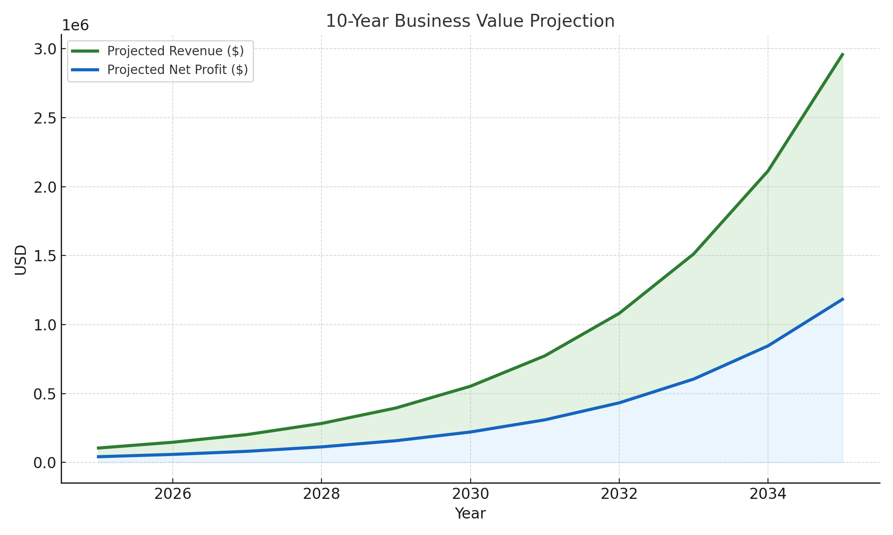

Renewable Energy Solution for Water & Environmental Restoration
WERC 2025 Design Contest
🔥 Our Why: Inspired by the Fire
In June 2024, a devastating wildfire swept through the Sierra Tarahumara in Chihuahua, Mexico, destroying homes, forests, and the hopes of many rural families. The communities, already battling poverty and drought, were left with nothing. This event deeply moved us. As students and engineers, we realized that we had the skills and responsibility to design something that could make a difference—not years from now, but today.
Our renewable water remediation system was born out of this tragedy. It’s a low-cost, sustainable solution aimed at helping underserved communities recover faster from fire damage, restore their soil, and reclaim access to clean water. We believe engineering can—and should—be used to heal. Through this project, we hope to turn devastation into opportunity, and provide a blueprint for hope, resilience, and environmental justice.
Renewable Energy Solution for Water & Environmental Restoration is a multidisciplinary engineering project developed for the WERC 2025 Environmental Design Contest. The project addresses the increasing risk of erosion, debris contamination, and long-term soil damage in wildfire-affected ecosystems by offering a scalable, off-grid water purification and soil recovery system.
Our solution integrates a wind-powered pump with a natural media filtration column and real-time soil moisture monitoring system. The system is designed to:
Collect contaminated water from simulated post-fire environments.
Filter it through natural layers of sand, cotton, activated coconut charcoal, lava rock, and gravel.
Return clean water to rehydrate soil and accelerate environmental recovery.
Use real-time Arduino-based data monitoring with humidity sensors and Wi-Fi logging.
System schematic showing windmill, electronics, sensor, filtration, and storage
Explore our CAD renderings showing the system design, windmill, structure, and filtration setup:
💸 Project Financial Overview
Our system was developed with an emphasis on affordability and modularity—delivering impactful results under a lean budget.
Total System Cost: $1,409.99
Field Materials & Tools: $644.46
Total Project Budget:$2,054.45
✅ Cost-effective & Modular

📈 10-Year Financial Impact Projection
Based on our initial unit cost of ~$2,050 and a projected sale price of $3,500, our system can generate strong revenue with every deployment.
With growing demand from wildfire-affected communities and increasing investment in climate resilience, we project scalable growth. Starting with just 30 units sold in year one and scaling at a conservative 40% annual growth, our model predicts:
865 units deployed by 2035
$3M+ in total revenue
$1.2M+ in net profit reinvestable into expansion or education
This growth model shows how affordable, modular environmental engineering solutions can create a sustainable business while restoring vulnerable ecosystems.

Figure: Revenue and Profit Growth Projections (2025–2035)